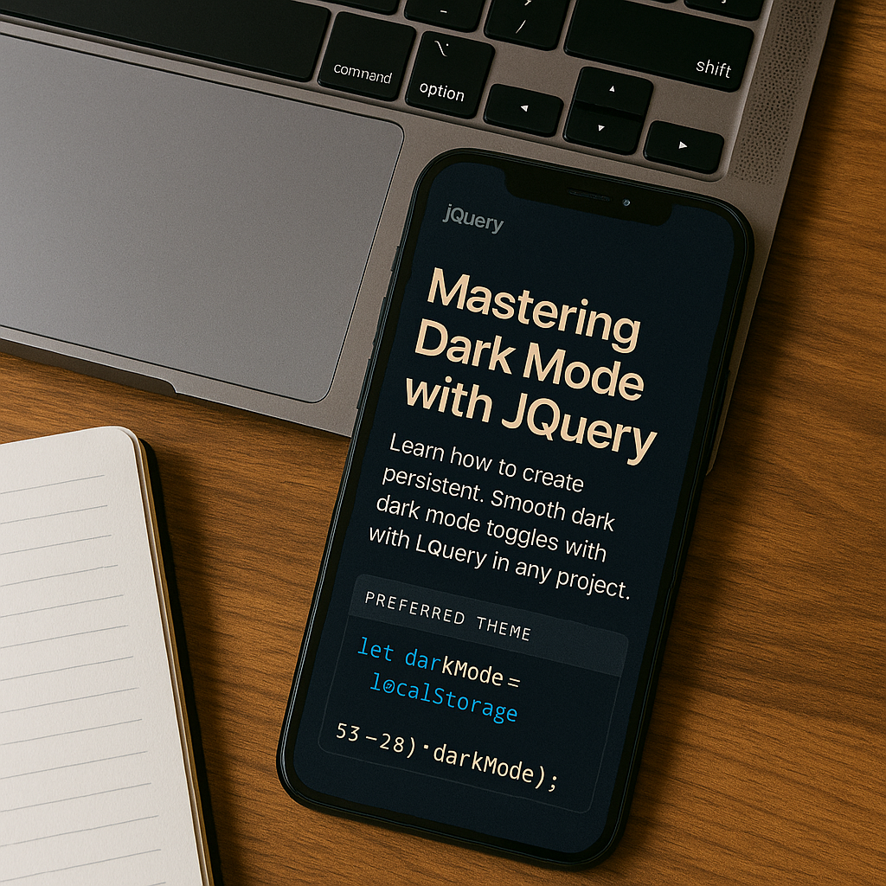

How I Built a PWA Calculator
Posted on July 2, 2025 • Tools: HTML, JS, Math.js
SmartCalc was my first proper shot at mixing clean design with real functionality. I gave it dark mode, full keyboard input, scientific buttons, and even a history feature using localStorage.
One of the coolest parts was hooking it up with math.js. That saved me from writing messy parsing logic and made the whole thing way more powerful.
For me, this wasn’t just about making a calculator - it was about building *my own tool* that actually felt smooth and usable. I’d used loads of clunky online calculators before, and I thought, “Why not just make something better myself?”
I hit plenty of little roadblocks along the way - from float precision headaches to making keyboard shortcuts work without wrecking the UI. But honestly, that’s where the real learning happened. Every bug taught me something new.
The highlight? Seeing it run offline for the first time after setting up the manifest and service worker. That tiny “Install” prompt felt like I’d just unlocked an achievement.
JavaScript
PWA
UI/UX

Dark Mode Toggle with jQuery
Posted on July 3, 2025 • UX Focused
I built a smooth, animated dark mode toggle with just a few lines of jQuery. It remembers your choice with localStorage, so even if you come back later, your preference sticks.
Dark mode isn’t just about the vibe - it’s about accessibility and making late-night browsing way easier on the eyes.
I’ve always been the type to flip on dark mode the second I see it as an option, so it only made sense that my blog respected that too. For me, it wasn’t about chasing a trend - it was about making the experience feel natural.
The toggle started off super plain, but I kept playing around with the animations and positioning until it felt smooth. Little things like that - the transitions, the saved preferences - make the whole site feel more personal.
Looking back, it’s crazy how just a handful of lines of jQuery can make a site feel so much more alive.
jQuery
Dark Mode
Blog Design Principles
Posted on July 4, 2025 • Design
I stick to three core principles when it comes to blog layout: whitespace, mobile-first design, and a consistent color scheme. You can see all of that baked into this site.
This project really helped me get comfortable with flexbox, grid systems, spacing, and figuring out how to balance looks with usability.
For me, designing this blog wasn’t just about “making it look nice.” I wanted it to feel calm, almost like stepping into a personal space. That’s why I leaned into big, open spacing - I can’t stand cluttered layouts that feel like they’re trying too hard.
I built it mobile-first, mainly because that’s how I read most blogs myself - on my phone, usually while stretched out on the couch. If it didn’t feel good there, it didn’t belong in the design.
The toughest part was locking in the color scheme. I went through a few versions before landing on something that wasn’t too loud but still had personality. Deep purples and cool tones just felt right in the end.
Design
Mobile-First
Best Practices